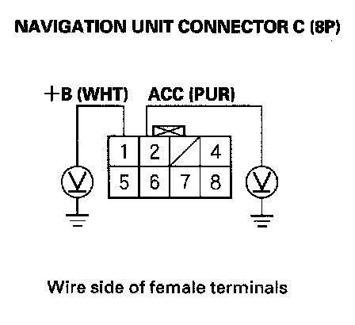
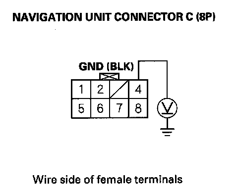
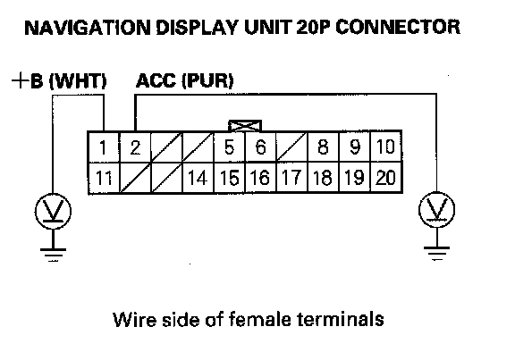
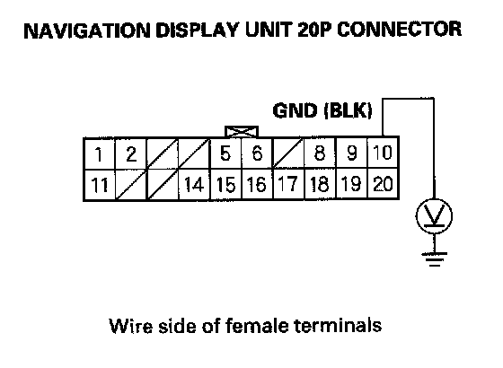

No picture is displayed
No picture is displayedDiagnostic Test: Navi System Link
NOTE:
- Check the navigation volume level (see owner's manual for more information).
- Always check the connectors for poor connections or loose terminals.
- Before troubleshooting, make sure you have the navigation system anti-theft code.
- Confirm the correct DVD color and version disc is installed in the navigation unit.
1. Check the No. 5 (10 A), No. 7 (10 A) fuse and No. 32 (10 A) fuse in the under-dash fuse relay box, and reinstall the fuses if they are OK.
Are the fuses OK?
YES - Go to step 2.
NO - Replace the fuse and recheck.
2. Turn the ignition switch to ACC (I).
3. Operate the radio and listen to the audio.
Can you hear the audio?
YES - Go to step 4.
NO - Check the ACC circuit.
4. Turn the ignition switch ON (II).

5. Measure the voltage between body ground and navigation unit connector C (8P) terminals No. 1 and No. 2 individually.
Is there battery voltage?
YES - Go to step 6.
NO - If the +B wire does not have voltage, repair open in the wire between the under-dash fuse relay box and the navigation unit. If the ACC wire does not have voltage, repair open in the wire between the under-dash fuse/relay box and the navigation unit.

6. Measure the voltage between navigation unit connector C (8P) terminal No. 4 and body ground.
Is there less than 0.5 V?
YES - Go to step 7.
NO - Repair open in the wire between the navigation unit and body ground (G605).
7. Perform the forced starting of the display.
Is the diagnosis menu of the picture diagnosis displayed?
YES - Go into the Diagnostic mode and use the "Navi System Link" diagnostic to check the links.
NO - Go to step 8.
8. Shield the display unit from the sun with your hand, and check that the display is back lit (only back light is ON.)
Can you see the back light?
YES - Replace the navigation unit and retest. If the problem is still present, replace the navigation display unit.
NO - Go to step 9.

9. Measure the voltage between body ground and navigation display unit 20P connector terminal No. 1 and No. 2 individually.
Is there battery voltage?
YES - Go to step 10.
NO - If the +B wire does not have voltage, repair open in the wire between the under-dash fuse relay box and the navigation display unit 20P connector. If the ACC wire does not have voltage, repair open in the wire between the under-dash fuse/relay box and the navigation display unit 20P connector.

10. Measure the voltage between the navigation display 20P connector terminal No. 10 and body ground.
Is there less than 0.5 V?
YES - Replace the navigation display unit.
NO - Repair open or poor connections between the navigation display and body ground (G506).